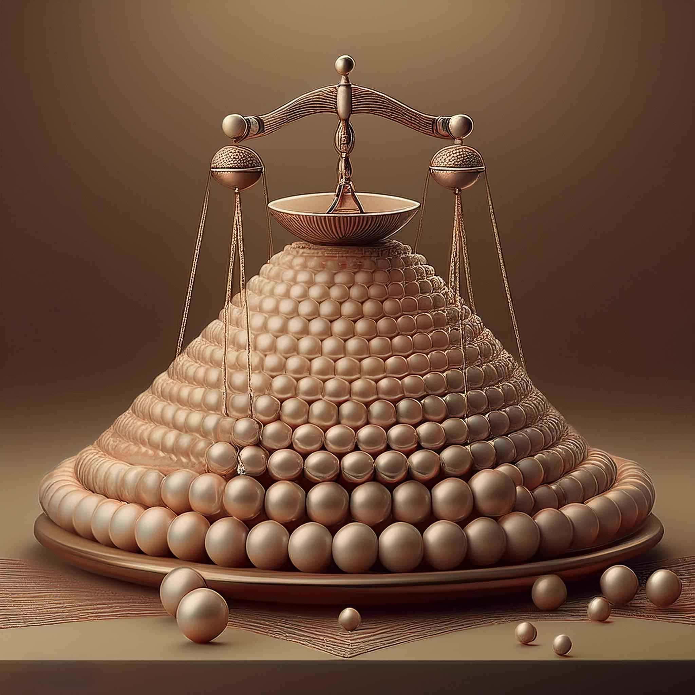

Pérola Mais Leve - O Quarto Problema
O problema da pérola mais leve é um desafio clássico que Beremiz, o protagonista do livro "O Homem que Calculava", enfrenta. Neste problema, ele tem 8 pérolas, uma das quais é mais leve que as outras. A meta é descobrir qual pérola é a mais leve utilizando apenas duas pesagens em uma balança de dois pratos.
Estratégia:
Para resolver o problema, Beremiz divide as pérolas em três grupos:
- Grupo A: 3 pérolas
- Grupo B: 3 pérolas
- Grupo C: 2 pérolas (as que sobraram)

Exemplo de uma imagem.
Primeira Pesagem:
Compare o grupo A com o grupo B:
- Se A igual a B, a pérola mais leve está no grupo C. Para a segunda pesagem, você pesa as duas pérolas do grupo C.
- Se A for mais leve que B, a pérola mais leve está no grupo A. Pegue duas pérolas de A e pese-as.
- Se B for mais leve que A, a pérola mais leve está no grupo B, seguindo o mesmo raciocínio.
Resultados da Pesagem:
Após a segunda pesagem, se as duas pesadas forem iguais, a pérola que não foi pesada é a mais leve. Se não forem iguais, a pérola que subir na balança é a resposta.
Esta estratégia ilustra a aplicação do método de divisão e conquista. Beremiz demonstra não apenas a lógica por trás das pesagens, mas também a beleza da matemática em sua resolução.

Exemplo de uma imagem.
Conclusão:
Com apenas duas pesagens, Beremiz consegue identificar a pérola mais leve, independentemente de qual grupo contém a pérola diferente. Esta solução é um excelente exemplo da capacidade de raciocínio lógico e eficiência na resolução de problemas.
O desafio destaca a importância do pensamento crítico e analítico, habilidades que são essenciais não apenas na matemática, mas em diversas áreas da vida.